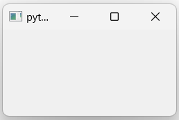

GUI1 Example
In this first example of GUI, we will learn the basics of the development of a graphical interface, based on PyQt6.
At the end of this example, you will be able to create this skeleton of graphical application.

The complete file Gui01.py of this example is in the interface/ directory.
MainWindow and main function
As mentionned in the PyQt6 Basics page, graphical applications with Qt are based on containers and contents to include as graphical objects.
The main container of a window application is a QMainWindow object from Qt.
It could also be a QWidget object, but this case will not be processed in this tutorial.
Creation of a main window
To create the main block of your final application, you have to develop a class inherited from the QMainWindow object of the QtWidgets sub-library of the PyQt6 API.
Copy this few lines in a *.py file (my_app.py for example).
1from PyQt6.QtWidgets import QMainWindow
2
3class MainWindow(QMainWindow):
4 def __init__(self):
5 super().__init__()
To initialize this graphical main window, the initialization function of the mother class (QMainWindow class) is called.
This example code does not produce a windowed application because no MainWindow object is instantiated.
Creation of the main function
To vizualize the result of the previous code, the main function has to instantiate a MainWindow object and to execute the application, via the QApplication class.
Complete the previous my_app.py file by these new lines.
1from PyQt6.QtWidgets import QApplication
2
3if __name__ == "__main__":
4 app = QApplication(sys.argv)
5 window = MainWindow()
6 window.show()
7 sys.exit(app.exec())
The execution of this code give the previous showed in the next figure.
Title, icon and size of the application
Applications often have title and mostly icon that appear in the title bar (the top bar of the application window).
In the __init__ function of the MainWindow class, you can :
specify a title by the
setWindowTitlemethod of the QMainWindow class,add an icon to your application via a QIcon object from the QtGui sub-library of the PyQt6 API and the
setWindowIconmethod of the QMainWindow class
You can also specify the size and the position of your windowed application by using the setGeometry method of the QMainWindow class. This method takes 4 parameters :
x position of the top-left corner of your application (horizontal position),
y position of the top-left corner of your application (vertical position),
width of the window (horizontal size),
height of the window (vertical size)
1from PyQt6.QtGui import QIcon
2
3class MainWindow(QMainWindow):
4 def __init__(self):
5 super().__init__()
6
7 # Define Window title
8 self.setWindowTitle("LEnsE - Window Title")
9 self.setWindowIcon(QIcon('images/IOGS-LEnsE-logo.jpg'))
10 self.setGeometry(50, 50, 1000, 700)
First graphical container and object
To add
Separated classes for containers
In order to not overload the code and to make the debugging process easier, you can create a specific class for each main part of your application, especially for containers. All the containers of your main application will inherite from the QWidget class.